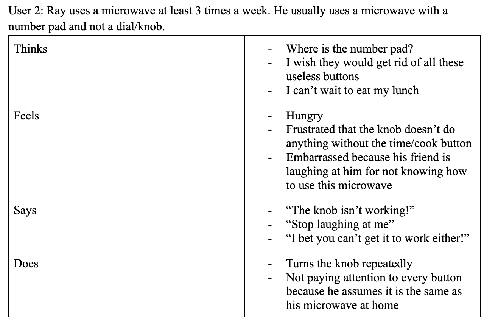
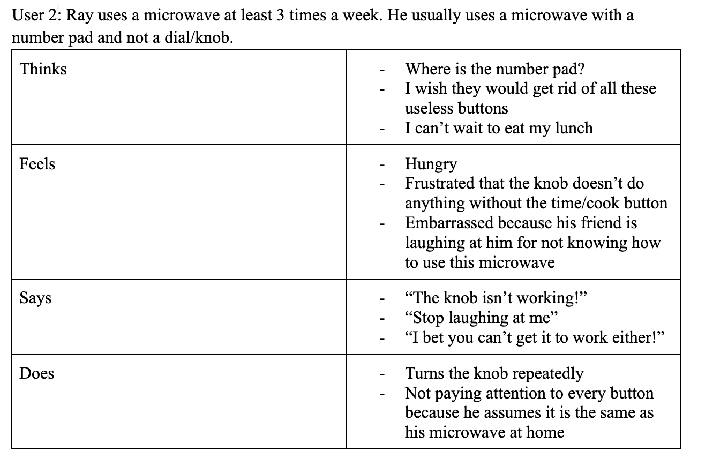

Personas and Storyboard
Part 1: Preparation
1) Microwave in the CIT
2)
- How often do you use the microwave?
- Why do you use a microwave?
- Did you know you had to press timer/clock before turning the knob to select a time?
- Do you ever use the extra buttons like defrost/popcorn?
- Do you know how to use these buttons?
- How do you decide how long to microwave things for?
- Do you prefer the knob or the number pad on a microwave?
3) This interface solves the issue of heating up food in a faster way.
Its key components are buttons that each have a different functions.
Part 2: Recording Observations
1)
- There were too many buttons, users got confused
- One user was confused on how to open the microwave
because some have buttons and some open when pulled
- Users didn’t know how to microwave for longer than a minute
- Users did not know to press time/cook before turning the knob to set longer than a minute
- Users assumed the knob could be used after
quick min to increase the time past one minute
2)
- How often do you use the microwave?
- Why do you use a microwave?
- It is more convenient to heat up food than using a stove
- Did you know you had to press timer/clock before turning the knob to select a time?
- No, the users assumed that turning the knob would allow them to select a time longer than 1 min
- Do you ever use the extra buttons like defrost/popcorn?
- No, because users usually follow packaging instructions
- Do you know how to use these buttons?
- No, because users never use them
- How do you decide how long to microwave things for?
- From previous experience
- If a new thing is being microwaved, users will start with one minute and
continue doing one minute increments until it is warmed up to their liking
- Do you prefer the knob or the number pad on a microwave?
- Number pad because more convenient and less confsuing
- Cuts out irrelevant timing (no one is going to microwave something
for 28 seconds instead of 30 seconds)
Part 3: Personas
 

Part 4: Storyboard